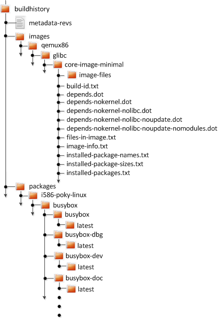
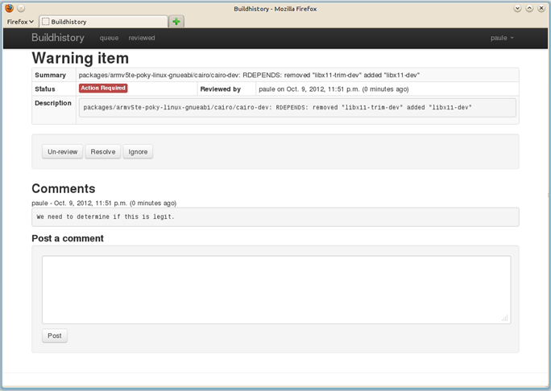

34 Maintaining Build Output Quality with buildhistory
Many factors can influence the quality of a build. For example, if you upgrade a recipe to use a new version of an upstream software package or you experiment with some new configuration options, subtle changes can occur that you might not detect until later. Consider the case where your recipe is using a newer version of an upstream package. In this case, a new version of a piece of software might introduce an optional dependency on another library, which is auto-detected. If that library has already been built when the software is building, the software will link to the built library and that library will be pulled into your image along with the new software even if you did not want the library.
The buildhistory class helps you maintain the quality of your build output. You can use the class to highlight unexpected and possibly unwanted changes in the build output. When you enable build history, it records information about the contents of each package and image and then commits that information to a local Git repository where you can examine the information.
The remainder of this section describes the following:
34.1 Enabling and Disabling Build History
Build history is disabled by default. To enable it, add the following INHERIT statement and set the BUILDHISTORY_COMMIT variable to "1" in a configuration file, such as the build/conf/local.conf file:
INHERIT += "buildhistory"
BUILDHISTORY_COMMIT = "1"
Enabling build history as previously described causes the OpenEmbedded build system to collect build output information and commit it as a single commit to a local Git repository.
Nota
Enabling build history increases your build times slightly, particularly for images, and increases the amount of disk space used during the build.
You can disable build history by removing the previous statements from your configuration file.
34.2 Understanding What the Build History Contains
Build history information is kept in ${TOPDIR}/buildhistory
in the Build Directory as defined by the BUILDHISTORY_DIR
variable. Here is an example abbreviated listing:


At the top level, there is a metadata-revs file that lists the
revisions of the repositories for the enabled layers when the build was
produced. The rest of the data splits into separate packages,
images and sdk directories, the contents of which are described
as follows.
34.2.1 Build History Package Information
The history for each package contains a text file that has name-value
pairs with information about the package. For example,
buildhistory/packages/i586-poky-linux/busybox/busybox/latest
contains the following:
PV = 1.22.1
PR = r32
RPROVIDES =
RDEPENDS = glibc (>= 2.20) update-alternatives-opkg
RRECOMMENDS = busybox-syslog busybox-udhcpc update-rc.d
PKGSIZE = 540168
FILES = /usr/bin/* /usr/sbin/* /usr/lib/busybox/* /usr/lib/lib*.so.* \
/etc /com /var /bin/* /sbin/* /lib/*.so.* /lib/udev/rules.d \
/usr/lib/udev/rules.d /usr/share/busybox /usr/lib/busybox/* \
/usr/share/pixmaps /usr/share/applications /usr/share/idl \
/usr/share/omf /usr/share/sounds /usr/lib/bonobo/servers
FILELIST = /bin/busybox /bin/busybox.nosuid /bin/busybox.suid /bin/sh \
/etc/busybox.links.nosuid /etc/busybox.links.suid
Most of these
name-value pairs correspond to variables used to produce the package.
The exceptions are FILELIST, which is the actual list of files in
the package, and PKGSIZE, which is the total size of files in the
package in bytes.
There is also a file that corresponds to the recipe from which the package
came (e.g. buildhistory/packages/i586-poky-linux/busybox/latest):
PV = 1.22.1
PR = r32
DEPENDS = initscripts kern-tools-native update-rc.d-native \
virtual/i586-poky-linux-compilerlibs virtual/i586-poky-linux-gcc \
virtual/libc virtual/update-alternatives
PACKAGES = busybox-ptest busybox-httpd busybox-udhcpd busybox-udhcpc \
busybox-syslog busybox-mdev busybox-hwclock busybox-dbg \
busybox-staticdev busybox-dev busybox-doc busybox-locale busybox
Finally, for those recipes fetched from a version control system (e.g.,
Git), there is a file that lists source revisions that are specified in
the recipe and the actual revisions used during the build. Listed
and actual revisions might differ when
SRCREV is set to
${AUTOREV}. Here is an
example assuming
buildhistory/packages/qemux86-poky-linux/linux-yocto/latest_srcrev):
# SRCREV_machine = "38cd560d5022ed2dbd1ab0dca9642e47c98a0aa1"
SRCREV_machine = "38cd560d5022ed2dbd1ab0dca9642e47c98a0aa1"
# SRCREV_meta = "a227f20eff056e511d504b2e490f3774ab260d6f"
SRCREV_meta ="a227f20eff056e511d504b2e490f3774ab260d6f"
You can use the
buildhistory-collect-srcrevs command with the -a option to
collect the stored SRCREV values from build history and report them
in a format suitable for use in global configuration (e.g.,
a distro include configuration file) to override floating
AUTOREV values to a fixed set of revisions. Here is some example
output from this command:
$ buildhistory-collect-srcrevs -a
# all-poky-linux
SRCREV:pn-ca-certificates = "07de54fdcc5806bde549e1edf60738c6bccf50e8"
SRCREV:pn-update-rc.d = "8636cf478d426b568c1be11dbd9346f67e03adac"
# core2-64-poky-linux
SRCREV:pn-binutils = "87d4632d36323091e731eb07b8aa65f90293da66"
SRCREV:pn-btrfs-tools = "8ad326b2f28c044cb6ed9016d7c3285e23b673c8"
SRCREV_bzip2-tests:pn-bzip2 = "f9061c030a25de5b6829e1abf373057309c734c0"
SRCREV:pn-e2fsprogs = "02540dedd3ddc52c6ae8aaa8a95ce75c3f8be1c0"
SRCREV:pn-file = "504206e53a89fd6eed71aeaf878aa3512418eab1"
SRCREV_glibc:pn-glibc = "24962427071fa532c3c48c918e9d64d719cc8a6c"
SRCREV:pn-gnome-desktop-testing = "e346cd4ed2e2102c9b195b614f3c642d23f5f6e7"
SRCREV:pn-init-system-helpers = "dbd9197569c0935029acd5c9b02b84c68fd937ee"
SRCREV:pn-kmod = "b6ecfc916a17eab8f93be5b09f4e4f845aabd3d1"
SRCREV:pn-libnsl2 = "82245c0c58add79a8e34ab0917358217a70e5100"
SRCREV:pn-libseccomp = "57357d2741a3b3d3e8425889a6b79a130e0fa2f3"
SRCREV:pn-libxcrypt = "50cf2b6dd4fdf04309445f2eec8de7051d953abf"
SRCREV:pn-ncurses = "51d0fd9cc3edb975f04224f29f777f8f448e8ced"
SRCREV:pn-procps = "19a508ea121c0c4ac6d0224575a036de745eaaf8"
SRCREV:pn-psmisc = "5fab6b7ab385080f1db725d6803136ec1841a15f"
SRCREV:pn-ptest-runner = "bcb82804daa8f725b6add259dcef2067e61a75aa"
SRCREV:pn-shared-mime-info = "18e558fa1c8b90b86757ade09a4ba4d6a6cf8f70"
SRCREV:pn-zstd = "e47e674cd09583ff0503f0f6defd6d23d8b718d3"
# qemux86_64-poky-linux
SRCREV_machine:pn-linux-yocto = "20301aeb1a64164b72bc72af58802b315e025c9c"
SRCREV_meta:pn-linux-yocto = "2d38a472b21ae343707c8bd64ac68a9eaca066a0"
# x86_64-linux
SRCREV:pn-binutils-cross-x86_64 = "87d4632d36323091e731eb07b8aa65f90293da66"
SRCREV_glibc:pn-cross-localedef-native = "24962427071fa532c3c48c918e9d64d719cc8a6c"
SRCREV_localedef:pn-cross-localedef-native = "794da69788cbf9bf57b59a852f9f11307663fa87"
SRCREV:pn-debianutils-native = "de14223e5bffe15e374a441302c528ffc1cbed57"
SRCREV:pn-libmodulemd-native = "ee80309bc766d781a144e6879419b29f444d94eb"
SRCREV:pn-virglrenderer-native = "363915595e05fb252e70d6514be2f0c0b5ca312b"
SRCREV:pn-zstd-native = "e47e674cd09583ff0503f0f6defd6d23d8b718d3"
Nota
Here are some notes on using the buildhistory-collect-srcrevs command:
By default, only values where the SRCREV was not hardcoded (usually when AUTOREV is used) are reported. Use the
-aoption to see all SRCREV values.The output statements might not have any effect if overrides are applied elsewhere in the build system configuration. Use the
-foption to add theforcevariableoverride to each output line if you need to work around this restriction.The script does apply special handling when building for multiple machines. However, the script does place a comment before each set of values that specifies which triplet to which they belong as previously shown (e.g.,
i586-poky-linux).
34.2.2 Build History Image Information
The files produced for each image are as follows:
image-files:A directory containing selected files from the root filesystem. The files are defined by BUILDHISTORY_IMAGE_FILES.build-id.txt:Human-readable information about the build configuration and metadata source revisions. This file contains the full build header as printed by BitBake.*.dot:Dependency graphs for the image that are compatible withgraphviz.files-in-image.txt:A list of files in the image with permissions, owner, group, size, and symlink information.image-info.txt:A text file containing name-value pairs with information about the image. See the following listing example for more information.installed-package-names.txt:A list of installed packages by name only.installed-package-sizes.txt:A list of installed packages ordered by size.installed-packages.txt:A list of installed packages with full package filenames.
Nota
Installed package information is able to be gathered and produced even if package management is disabled for the final image.
Here is an example of image-info.txt:
DISTRO = poky
DISTRO_VERSION = 3.4+snapshot-a0245d7be08f3d24ea1875e9f8872aa6bbff93be
USER_CLASSES = buildstats
IMAGE_CLASSES = qemuboot qemuboot license_image
IMAGE_FEATURES = allow-empty-password empty-root-password allow-root-login post-install-logging
IMAGE_LINGUAS =
IMAGE_INSTALL = packagegroup-core-boot speex speexdsp
BAD_RECOMMENDATIONS =
NO_RECOMMENDATIONS =
PACKAGE_EXCLUDE =
ROOTFS_POSTPROCESS_COMMAND = ssh_allow_empty_password ssh_allow_root_login postinst_enable_logging rootfs_update_timestamp write_image_test_data empty_var_volatile sort_passwd rootfs_reproducible
IMAGE_POSTPROCESS_COMMAND = buildhistory_get_imageinfo
IMAGESIZE = 9265
Other than IMAGESIZE,
which is the total size of the files in the image in Kbytes, the
name-value pairs are variables that may have influenced the content of
the image. This information is often useful when you are trying to
determine why a change in the package or file listings has occurred.
34.2.3 Using Build History to Gather Image Information Only
As you can see, build history produces image information, including dependency graphs, so you can see why something was pulled into the image. If you are just interested in this information and not interested in collecting specific package or SDK information, you can enable writing only image information without any history by adding the following to a configuration file:
INHERIT += "buildhistory"
BUILDHISTORY_COMMIT = "0"
BUILDHISTORY_FEATURES = "image"
Here, you set the BUILDHISTORY_FEATURES variable to use the image feature only.
34.2.4 Build History SDK Information
Build history collects similar information on the contents of SDKs (e.g.
bitbake -c populate_sdk imagename) as compared to information it
collects for images. Furthermore, this information differs depending on
whether an extensible or standard SDK is being produced.
The following list shows the files produced for SDKs:
files-in-sdk.txt:A list of files in the SDK with permissions, owner, group, size, and symlink information. This list includes both the host and target parts of the SDK.sdk-info.txt:A text file containing name-value pairs with information about the SDK. See the following listing example for more information.sstate-task-sizes.txt:A text file containing name-value pairs with information about task group sizes (e.g. do_populate_sysroot tasks have a total size). Thesstate-task-sizes.txtfile exists only when an extensible SDK is created.sstate-package-sizes.txt:A text file containing name-value pairs with information for the shared-state packages and sizes in the SDK. Thesstate-package-sizes.txtfile exists only when an extensible SDK is created.sdk-files:A folder that contains copies of the files mentioned inBUILDHISTORY_SDK_FILESif the files are present in the output. Additionally, the default value ofBUILDHISTORY_SDK_FILESis specific to the extensible SDK although you can set it differently if you would like to pull in specific files from the standard SDK.The default files are build/conf/local.conf, build/conf/bblayers.conf, build/conf/auto.conf,
conf/locked-sigs.inc, andconf/devtool.conf. Thus, for an extensible SDK, these files get copied into thesdk-filesdirectory.The following information appears under each of the
hostandtargetdirectories for the portions of the SDK that run on the host and on the target, respectively:Nota
The following files for the most part are empty when producing an extensible SDK because this type of SDK is not constructed from packages as is the standard SDK.
depends.dot:Dependency graph for the SDK that is compatible withgraphviz.installed-package-names.txt:A list of installed packages by name only.installed-package-sizes.txt:A list of installed packages ordered by size.installed-packages.txt:A list of installed packages with full package filenames.
Here is an example of sdk-info.txt:
DISTRO = poky
DISTRO_VERSION = 1.3+snapshot-20130327
SDK_NAME = poky-glibc-i686-arm
SDK_VERSION = 1.3+snapshot
SDKMACHINE =
SDKIMAGE_FEATURES = dev-pkgs dbg-pkgs
BAD_RECOMMENDATIONS =
SDKSIZE = 352712
Other than SDKSIZE, which is
the total size of the files in the SDK in Kbytes, the name-value pairs
are variables that might have influenced the content of the SDK. This
information is often useful when you are trying to determine why a
change in the package or file listings has occurred.
34.2.5 Examining Build History Information
You can examine build history output from the command line or from a web interface.
To see any changes that have occurred (assuming you have BUILDHISTORY_COMMIT = "1"), you can simply use any Git command that allows you to view the history of a repository. Here is one method:
$ git log -p
You need to realize, however, that this method does show changes that are not significant (e.g. a package's size changing by a few bytes).
There is a command-line tool called buildhistory-diff, though,
that queries the Git repository and prints just the differences that
might be significant in human-readable form. Here is an example:
$ bitbake-builds/layers/openembedded-core/scripts/buildhistory-diff . HEAD^
Changes to images/qemux86_64/glibc/core-image-minimal (files-in-image.txt):
/etc/anotherpkg.conf was added
/sbin/anotherpkg was added
* (installed-package-names.txt):
* anotherpkg was added
Changes to images/qemux86_64/glibc/core-image-minimal (installed-package-names.txt):
anotherpkg was added
packages/qemux86_64-poky-linux/v86d: PACKAGES: added "v86d-extras"
* PR changed from "r0" to "r1"
* PV changed from "0.1.10" to "0.1.12"
packages/qemux86_64-poky-linux/v86d/v86d: PKGSIZE changed from 110579 to 144381 (+30%)
* PR changed from "r0" to "r1"
* PV changed from "0.1.10" to "0.1.12"
Nota
The buildhistory-diff tool requires the GitPython
package. Be sure to install it using Pip3 as follows:
$ pip3 install GitPython --user
Alternatively, you can install python3-git using the appropriate
distribution package manager (e.g. apt, dnf, or zipper).
To see changes to the build history using a web interface, follow the
instruction in the README file
here.
Here is a sample screenshot of the interface:

